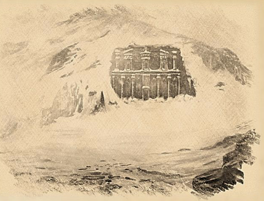
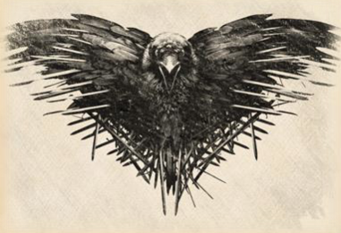

Gegenstände
Fey von Barovia

Hierin liegt die druidische Geschichte der "ba ly saga", was soviel bedeutet wie "die Sage der Drei", über die drei Fey, die in alten Zeiten die Ländereien von Barovia behüteten und sie nährten, wie eine Mutter ihr eigenes Kind liebt und nährt.
Drei Himmlische Wesen, die Fey-Schwestern
Bevor Menschen in dem als Barovia bekannten Tal lebten, wachten drei himmlische Wesen, die Fey-Schwestern, gemeinsam über Flora, Fauna und Land. In ihrer Einheit waren sie die Mutter Natur, die für das Tal sorgte. Jede der Fey-Schwestern sorgte mit ihrer Liebe und Fürsorge für das Tal.
- Die Waldfey wachte über die Pflanzen und Tiere.
- Die Wasserfey wachte über den Regen, die Seen und die Flüsse.
- Die Bergfey wachte über das Land und die Erde.
Gemeinsam schufen sie ein Gleichgewicht und Harmonie in den Jahreszeiten.
Die Menschen kommen in das Tal von Barovia
Als die ersten Menschen in das Tal kamen, erfuhren die Menschen von den drei Fey. Die Menschen respektierten die Fey und betrachteten sie als ihre Göttinnen, die für das Tal sorgten. Als die Menschen lernten, im Einklang mit der Natur zu leben, schufen sie eine Ordnung (einen Druidenorden), um dem natürlichen Gleichgewicht Tribut und Respekt zu zollen, denn die Menschen waren Gäste des Tals und der Fey.
Die Steinkreise der Fey
Dieser Druidenorden schuf drei Steinkreise, die als Fey-jost bekannt sind und jeweils eine Fey repräsentieren.
- Der erste Steinkreis (der Steinkreis der Waldfey) wurde am Waldrand als Tribut an die Waldfey errichtet.
- Eine weitere Fey-jost (der Steinkreis der Wasserfey) wurde entlang des Flusses als Tribut an die Wasserfey errichtet.
- Die dritte Fey-jost (der Steinkreis der Bergfey) wurde auf einem Hügel mit Blick auf die großen Berge als Tribut an die Bergfey erbaut.

Riten der Druiden
Am längsten Tag des Sommers, der Sommersonnenwende, wenn die Sonne im Zenit stand, kamen die Druiden zu jedem der Fey-josts (Steinkreise der Fey), legten Blumen um die Steine und dankten den Fey für einen wunderbaren Frühling. In der längsten Nacht, der Wintersonnenwende, zündeten die Druiden Kerzen an und brachten frische, warme Brote als Geschenk, um die Fey während der langen Winternächte zu wärmen.
Der Lebenszyklus des Tals
Barovia war ein üppiges und fruchtbares Gebirgstal, das häufig von Wolken und Nebel bedeckt war, was die Flora gesund und schön hielt, aber für die Menschen, die versuchten, die Pflanzzeit anhand des Himmels zu bestimmen, ein Rätsel war. Mit der Zeit erkannten die Fey, dass auch die Menschen und ihr Druidenorden Teil des Lebenszyklus im Tal waren.
Entdeckung des Magischen Bernsteins
Die Fey wagten sich in einen Berg, der voller Bernstein war. Sie entdeckten Bernstein, der eine magische Eigenschaft besaß. Er konnte Magie und Macht nutzbar machen.
Erschaffung der Feensteine
Jede Fey sammelte einen Bernsteinsplitter aus dem Berg und erschuf einen Fey-Edelstein, wobei sie einen Teil ihrer himmlischen Magie in jeden Edelstein legte.
Die Edelsteine der Fey helfen den Druiden, die Jahreszeiten zu verfolgen
Die Fey hinterließen ihre Edelsteine an ihren jeweiligen Fey-jost (Steinkreis) und wiesen die Druiden an, die Edelsteine unter den Steinkreisen zu vergraben. Die unter den Steinkreisen vergrabenen Edelsteine lieferten viermal im Jahr ein Zeichen (eine Glyphe, die leuchtete):
- zur Frühlings-Tagundnachtgleiche,
- zur Sommersonnenwende,
- zur Herbst-Tagundnachtgleiche und
- zur Wintersonnenwende.
Die Fey-Glyphen halfen den Druiden, die Bauern und Viehzüchter von Barovia zu leiten und ihnen mitzuteilen, wann sie pflanzen und wann sie ernten sollten. Sie sagten ihnen auch, wann sie die Herden auf die frischen Sommerweiden führen und wann sie sie für den Winter nach Hause bringen sollten.
Jahrhundertelang lebten die Menschen im Tal im Einklang mit der Natur und fühlten sich von den Fey gesegnet. Viermal im Jahr brachten die Druiden Geschenke und suchten die Zeichen an den Steinkreisen. Als Teil des Rituals rezitierten die Druiden für jede Fey ein Gedicht.
Geschenke für die Fey
- Frühlings-Tagundnachtgleiche die Tser-Blume
- Sommersonnenwende eine kleine Traube barovianischer Weintrauben
- Herbst-Tagundnachtgleiche ein Scheffel roter barovianischer Äpfel
- Wintersonnenwende ein Laib Brot aus barovianischem Weizen

Die Fey und neugeborene Babies
Es war kein Geheimnis, dass die Fey-Schwestern ein Faible für neugeborene Babys hatten. Sie waren dafür bekannt, dass sie gelegentlich den Schreien eines Neugeborenen aus der Wildnis folgten, um neugeborene Mütter in ländlichen Gegenden zu besuchen. Dort angekommen, umschwärmten sie das Baby eine Weile, wünschten Mutter und Kind alles Gute und ließen sie dann in Ruhe. In seltenen Fällen, wenn ein Baby im Frühling geboren wurde, begleiteten neugeborene Rehkitze die Fey, um die Neugeborenen zu besuchen und die Menschen und Tiere des Tals zu vereinen.
Die Ankunft der Dunklen Mächte
Jahrhunderte vergingen, und ohne Vorwarnung drangen dunkle Mächte in das Tal ein. Die Fey und Druiden kämpften gemeinsam gegen die dunklen Mächte, mussten aber feststellen, dass sie sie nicht besiegen konnten.
Die Errichtung des Bernsteintempels
Die Fey teilten das Wissen um die mächtige Magie im Bernsteinberg mit den Druiden. Wenn der mächtige Bernstein die Magie der Fey nutzbar machen könnte, könnte er auch die dunklen Mächte, die das Tal plagen, bändigen. Die Fey und die Druiden nutzten jedes Quäntchen magischen Bernsteins im Berg, um einen geheimen Tempel zu errichten, in dem die dunklen Mächte weit weg vom Tal und den Menschen gefangen gehalten wurden.

Khazan
Khazan, ein junger Druide, wurde der erste Hüter des Bernsteintempels, der das Geheimnis bewahrte und dazu diente, das Tal vor der Finsternis zu schützen. Khazan erlernte die Magie, wurde ein großer Zauberer und bildete andere Druiden zu Zauberern aus, damit sie sich dem geheimen Orden zum Schutz des Bernsteintempels und seiner Geheimnisse anschließen konnten.
Schließlich kehrte Khazan in das Tal zurück und verbrachte sein Leben in seinem einsamen Turm, wo er die Magie studierte und sein Wissen denen anbot, die danach suchten.
Vergessenes Geheimnis
Der Bernsteintempel wurde das größte Geheimnis des Tals. Jahrhunderte vergingen, und schließlich vergaßen die Druiden und die Menschen im Tal den Tempel und ihre Brüder, die magischen Hüter des Bernsteintempels in den schneebedeckten Bergen.
Ankunft der Ersten Könige mit ihrer Religion des Herrn des Morgens
Als die ersten Könige nach Barovia kamen, brachten sie ihre Religion des Herrn des Morgens mit. Es wurden Kirchen errichtet, und der König wurde vom Herrn des Morgens gesegnet, um über das Volk zu herrschen. Der Herr des Morgens schätzte seine schönen Sonnenaufgänge und sorgte dafür, dass der allgegenwärtige Morgennebel in Barovia regelmäßig verbrannt wurde. Dadurch wuchsen die Ernten der Bauern stärker und höher, doch nach und nach verbrannte und verdorrte die einheimische, üppige Pflanzenwelt von Barovia. Schließlich vergaßen die Menschen in den Dörfern die Fey und zahlten dem König und seinem Herren des Morgens ihren Tribut für ihre Sicherheit. Sie bauten Mauern um ihre Dörfer, um sie vor der Wildnis und den vorgetäuschten Übeln zu schützen, die ihnen von der Kirche des Morgengottes gepredigt wurden.
Malduk: Ist der Morgengott wirklich Jelen?
Malduk: Welche Könige kamen als erstes nach Barovia?
Malduk: Wann wurde das Tal Barovia genannt?

Rückzug der Druiden
Da die Druiden mit ihrem Glauben in den Dörfern nicht mehr willkommen waren, zogen sie sich in einen kleinen Hain in der hintersten Ecke Barovias zurück und überließen das junge Königreich für immer seinem eigenen Schicksal. Die Druiden zollten den Fey weiterhin Tribut. Auch die Bauern zollten den Fey im Geheimen Tribut, um den König und seinen Grafen nicht zu verärgern, denn sie wussten, dass die Fey die Wächter waren, die das Land schützten und für Harmonie im Tal sorgten. Die Fey interessierten sich nicht für die Welt der Menschen, die hinter ihren Mauern lebten und zu ihren Göttern beteten. Denn die Fey waren im Tal, lange bevor die Könige kamen, und sie würden im Tal bleiben, lange nachdem die Könige gegangen waren.
Malduk: Wohin gingen die Druiden?
Großer Krieg
Ein Prinz kam mit seiner Armee in das Tal, um das Land als sein Königreich zu beanspruchen. Sein Heer war mächtig und seine Kampfeslust und sein Geschick waren groß. Der Große Krieg brachte Zerstörung in das Tal, und zum ersten Mal nahmen die Fey Notiz von der schweren Zerstörung des Landes durch den Menschen.
*Malduk: Welcher Prinz war das? Wann war das? Wer kämpfte gegen wen? Warum war das ein großer Krieg?
Nach den Hinweisen unten muss es Prinz Strahd gewesen sein. Es zeugt davon, dass sie von den Geschicken der Menschen wenig wahrgenommen hatten.*
Malduk: Oder war der Prinz hier erstmals nach Barovia gekommen? Wo ist er groß geworden? Wo seine Eltern? In Barovia oder in Velaris?
Als der Große Krieg vorbei war, stand der Prinz als Sieger da und beanspruchte das Land als sein Eigentum. Die Fey sahen die Dunkelheit, die in dem Prinzen brodelte. Eine Finsternis, die sie schon lange vergessen und im Bernsteintempel eingesperrt glaubten.
Malduk: Zu dem Zeitpunkt muss Prinz Strahd den Bernsteintempel schon besucht und die Dunkelheit befreit haben.

Der Einzug des Nebels
Der Herr des Morgens wurde verbannt, und die Nebel kehrten mit aller Macht in die Länder Barovias zurück. Sie zogen heran und vermischten sich mit dem dichten schwarzen Rauch des Krieges, der schwer in der Luft Barovias hing und an den Bäumen klebte. Es entstand ein dichter grauer Nebel, der das Land in eine kalte graue Blässe hüllte. Der Nebel schwächte die Magie der Fey auf schreckliche Weise und brachte ihre Verbindung zu den Ländern und dem Kreislauf des Lebens selbst aus dem Gleichgewicht. Da war noch etwas anderes... undefinierbar... die Nebel schienen ihren eigenen Willen zu haben. Der Nebel umhüllte das Tal und der Kreislauf des Lebens verlangsamte sich. Die knospenden Zeichen des Lebens im Frühling waren verschwunden, Tiere wurden mit hohlen Augen der Dunkelheit geboren, Blumen blühten nicht mehr, und Eier waren schwarz. Neue schreckliche Kreaturen tauchten aus den Wäldern auf, die Blumen starben, die Ernten begannen zu verfaulen, und das Land wurde dunkel. Die Zeichen der Finsternis waren auch in den Dörfern zu sehen, denn es wurden Babys geboren, die weder weinten noch lachten, und manche glaubten, sie seien seelenlos. Als die Fey diese letzte Wendung der Ereignisse entdeckten, wurden sie zutiefst beunruhigt und verzweifelt. Ihre Bitten an höhere Mächte blieben unbeantwortet. Mit der natürlichen Ordnung stimmte etwas ganz und gar nicht. Die Fey glaubten, dass die Wolke der Dunkelheit, die den Prinzen umgab, die schrecklichen Nebel hervorbrachte.
Über den Prinzen
Es hieß, dass der Prinz seinen einzigen Bruder und seine wahre Liebe während des großen Krieges verloren hatte. Das Herz des Prinzen war voller Dunkelheit und Kummer und sonst nichts. Er verbrachte viel Zeit damit, nach dem Körper seiner verlorenen Liebe zu suchen, und sein Herz war ein bodenloser Abgrund der Verzweiflung. Die Haltung des Prinzen war so, dass sie sich auf alles um ihn herum auswirkte. Die Last seines Verlustes war so schwer, dass sie eine große Dunkelheit über das Land legte und selbst die Nebel beeinflusste.
Erschaffung des Herz des Kummers
Die Fey glaubten, dass sie das Herz des Prinzen wiederherstellen und die Dunkelheit, die ihn umgab, aufheben müssten, um die Nebel zu heilen, die das Tal bedeckten und das Leben aus dem Land selbst erstickten. Die Fey beschlossen, ein magisches Geschenk für den Prinzen zu erschaffen, das den Kummer in seinem Herzen lindern sollte: das Herz des Kummers. Die Fey brachen ihre Edelsteine in zwei Hälften und nutzten einen Teil ihrer verbleibenden Kraft, um die drei Hälften zu einem großen Artefakt zu verschmelzen und das Herz des Kummers zu formen. Die Fey ließen ihre Liebe zum Leben und zum Tal in den Edelstein einfließen und gaben ihm die magischen Eigenschaften, um den Kummer und die Dunkelheit aus dem Herzen des Prinzen zu absorbieren.
Die Wasserfey überbringt Graf Strahd das Herz des Kummers
Die Wasserfey nahm menschliche Gestalt an und reiste zum Schloss des Prinzen, um ihm dieses große Geschenk, das Herz des Kummers, zu bringen. Die Wasserfey erklärte, wie das schwere Herz des Prinzen die Nebel verdarb, die das Land mit Dunkelheit bedeckten. Sie erklärte, dass das Geschenk, das von den Edelsteinen der drei Fey-Schwestern mit mächtiger Magie gefertigt wurde, den Kummer aus seinem Herzen nehmen würde. Es würde ihn von der Verzweiflung und Reue befreien, die ihn fesselten, und es würde das Land wiederherstellen, und das Königreich würde sich freuen. Der Prinz freute sich über das Geschenk und die magische Kraft des Herzens des Kummers, die den Prinzen mit unbändigem Eifer und schneller Entscheidungsfindung beflügelte.
Graf Strahd sperrt die Wasserfey ein und befiehlt die Entweihung der Steinkreise der Fey
Der Prinz hatte von den sagenumwobenen Fey gehört und ihnen während des großen Krieges keine Beachtung geschenkt, da er sie nur für einen Mythos hielt. Als er jedoch von ihrer Macht und den Edelsteinen erfuhr, konnte er sie nicht frei umherstreifen lassen. Er sperrte die Wasserfey ein und befahl seinen Dienern, die Steinkreise der Fey zu entweihen, die andere Hälfte der drei Edelsteine zu finden und die Fey zu fangen.

Der Wer-Rabe warnt die Fey und Druiden
Ein Rabe, der im Fenster des Schlosses saß, hörte, was zwischen dem Prinzen und der Wasserfey vor sich ging. Es war kein gewöhnlicher Rabe, es war ein Wer-Rabe. Der Wer-Rabe flog schneller, als die Befehle des Prinzen reichten, und warnte die beiden Fey und die Druiden, denn der Prinz war die Dunkelheit, und er hatte seine Schergen ausgesandt, um die Steinkreise zu zerstören, die Edelsteine zu finden und die verbliebenen Fey-Schwestern gefangen zu nehmen.

Die Fey graben die Edelsteine der Fey wieder aus
Die Bergfey und die Waldfey gruben ihre Edelsteine aus und gingen gemeinsam zum Steinkreis der Wasserfey (Fane) am Ufer des Flusses in der Nähe von Berez, aber die Schergen des Prinzen hatten den Steinkreis der Wasserfey bereits entweiht und der blaue Edelstein war verschwunden.
Die Fey brauchen Hilfe
Da sie befürchteten, dass der blaue Edelstein in den Händen des dunklen Prinzen und ihre Schwester seine Gefangene war, mussten sie andere finden, die ihnen zu Hilfe kamen, aber die Dorfbewohner von Barovia glaubten nicht mehr an die Fey, seit Generationen hatten sie den Herrn des Morgens verehrt und ihrem neuen Grafen von Barovia, dem dunklen Prinzen, Tribut gezollt.
Die Fey verstecken ihre Edelsteine
Da sie nur noch zwei Edelsteine hatten, ihre Schwester weggesperrt war und ihre Steinkreise entweiht wurden, versteckten sie die beiden verbliebenen Edelsteine.
- Die Waldfey vertraute ihren grünen Edelstein den Wer-Raben an, die sich als ehrenhaft und loyal erwiesen hatten.
- Die Bergfey vertraute ihren roten Edelstein Khazan dem Zauberer an, der im Turm lebte und den sie inzwischen kannte und dem sie vertraute.
Die Fey suchen nach Hilfe
Ihr nächster Weg war schwieriger geworden, als ihre schwindenden Kräfte es ertragen konnten. Sie mussten den blauen Edelstein beschaffen, die Wasserfey retten und die Steinkreise der Fey wiederherstellen. Nur dann konnten die drei Fey und ihre Edelsteine zusammengebracht werden, um den dunklen Prinzen zu besiegen. Sie mussten andere finden, die vertrauenswürdig und stark waren und die die Kraft hatten, sich dem dunklen Prinzen und seinen Schergen zu stellen. Im Tal gab es niemanden, an den sie sich wenden konnten, und sie mussten wahrhaft mächtige und tapfere Rebellen finden, die ihnen halfen.
Die Fey verstecken sich und warten auf Helden
Die Fey würden sich vor dem dunklen Prinzen und seinen Lakaien verstecken, bis sie Agenten finden würden, die stark genug waren, um dem Prinzen zu widerstehen, und sie dann als Stellvertreter einsetzen, um ihnen in ihrem Kampf gegen den korrupten Meistertaktiker zu helfen.
- Die Waldfey verwandelte sich in einen Menschen und lebte unter den Menschen von Vallaki. Sie hielt ihre Augen und Ohren offen, um diejenigen zu beobachten, die dem dunklen Prinzen dienten, und um nach denen Ausschau zu halten, die ihr helfen konnten.
- Die Bergfey verschwand auf der Suche nach denen, die mutig genug waren, ihnen zu helfen und sich dem dunklen Prinzen zu stellen.
Die Flucht der Wasserfey
Der dunkle Fürst unterschätzte die Macht der Wasserfey. Sie entkam aus dem Gefängnis und fand während ihrer Flucht in den Katakomben den Schädel eines großen Drachen, den sie einst gekannt hatte, den Drachen Argynvost, den der dunkle Fürst getötet hatte. Sie nutzte die verbliebene Magie, die ihr noch zur Verfügung stand, und belegte den Schädel mit einem mächtigen Flugzauber, setzte sich auf den Drachenschädel und flog aus dem Schloss, um ihre Schwestern zu warnen.
Malduk: Sie hat fliehen können, weil Khazan für eine Ablenkung gesorgt hat. Hat sie dabei allen Rest ihrer Magie verbraucht?
Die Wasserfey findet ihre Schwestern nicht mehr
Als sie ankam, waren ihre Schwestern verschwunden, die Steinkreise entweiht und zerstört, und die Edelsteine waren weg. Sie durchsuchte die Wälder und Berge, aber ohne Erfolg.
Graf Strahd vernichtet Berez
Als der dunkle Fürst erfuhr, dass die Wasserfey entkommen war und seine größte Beute, den Drachenschädel, an sich genommen hatte, kochte er vor Wut. Er rief die dunkle Magie an, um das Dorf Berez am Fluss Luna, das der Wasserfey huldigte, als Warnung für alle Barovianer zu zerstören: Die Fey waren Feinde des dunklen Prinzen. Jedes Dorf, das betete, Tribut zollte oder eine Fey verehrte, würde zerstört werden. Der Fluss stieg an und überflutete das einst schöne Dorf Berez. Im Laufe der Zeit wurde Berez zu einer Ruine und das umliegende Gebiet zu einem Sumpf.

Graf Strahd verflucht die Wasserfey zur Sumpf-Vetel
In seiner Grausamkeit verfluchte der dunkle Fürst die Wasserfey und machte sie zur Sumpf-Vetel, damit niemand außer den bösen Kreaturen, die den Sumpf bewohnten, ihr huldigen würde. Die Wasserfey, jetzt die verfluchte Sumpf-Vetel, kehrte zu ihrem Steinkreis und den Ruinen von Berez zurück, die im Sumpf lagen. Die Zeit verging und sie wurde bitter und zornig, aber ohne ihren Edelstein und ihre Schwestern hatte sie wenig Macht.
Die Wasserfey wendet sich an die Dunkelheit im Bernsteintempel
Die Wasserfey reiste zum Bernsteintempel in den Bergen und wandte sich an die dunklen Mächte, die dort gefangen gehalten wurden. Sie suchte die Kräfte, die tief im Bernsteintempel verborgen waren, um den dunklen Prinzen zu besiegen und das Tal wiederherzustellen.
Die Wasserfey wird von der Dunkelheit korrumpiert und verwandelt sich in Baba Lysaga
Während sie die Katakomben des Tempels und die Bernsteinhöhlen durchsuchte, wurde sie von den dunklen Mächten besessen und korrumpiert. Ihr Körper verdrehte und verformte sich, als sie mit den dunklen Mächten, die das Tal längst vergessen hatte, einen Pakt schloss. Als sie aus dem Bernsteintempel auftauchte, war sie nicht mehr die schöne Wasserfey, sondern eine entstellte, groteske Kreatur.
Die Wasserfey erschafft die Froschmenschen und eine Armee der Sumpfkreaturen
Sie kehrte zu den Sumpfruinen von Berez zurück und übte sich in ihren neu gewonnenen dunkelmagischen Kräften. Sie erschuf Kreaturen der Dunkelheit und eine Rasse von Froschmenschen, die als Bullywug bekannt sind und ihr dienten. Sie hat einen Pakt mit den Hexen und Sumpfgeistern geschlossen, die ihre Spione in Barovia sind.
In den Sümpfen treiben sich auch andere dunkle Kreaturen herum, von denen einige mit ihren dunklen Experimenten in Konflikt geraten sind. Manche glauben, dass sie eine Armee von Sumpfkreaturen aufstellt, um den dunklen Prinzen und sogar die Dörfer der Menschen zu vernichten, denen sie die Schuld an allem gibt, was geschehen ist.
Es wird angenommen, dass die Sumpf-Vetel den Namen Baba Lysaga mit teuflischem Stolz als ihren eigenen angenommen hat.

KI-Zusammenfassung
Fey von Barovia ist ein Gegenstand im Besitz der Gruppe, bei Malduk. Die lokalen Notizen halten dazu fest: Hierin liegt die druidische Geschichte der "ba ly saga", was soviel bedeutet wie "die Sage der Drei", über die drei Fey, die in alten Zeiten die Ländereien von Barovia behüteten und sie nährten... Bevor Menschen in dem als Barovia bekannten Tal lebten, wachten drei himmlische Wesen, die Fey-Schwestern, gemeinsam über Flora, Fauna und Land. In ihrer Einheit waren sie die Mutter Natur... Die Waldfey wachte über die Pflanzen und Tiere. Die Wasserfey wachte über den Regen, die Seen und die Flüsse. Direkte Bezüge bestehen zu druidische, Fey, Barovia, Fey-Schwestern, Tal. Fey von Barovia wird außerdem in Fluss Luna, Bernsteinberg, Steinkreis der Bergfey, Steinkreis der Waldfey, Steinkreis der Wasserfey erwähnt. Diese Zusammenfassung folgt ausschließlich den vorhandenen Notizen und ergänzt keine neuen Fakten.